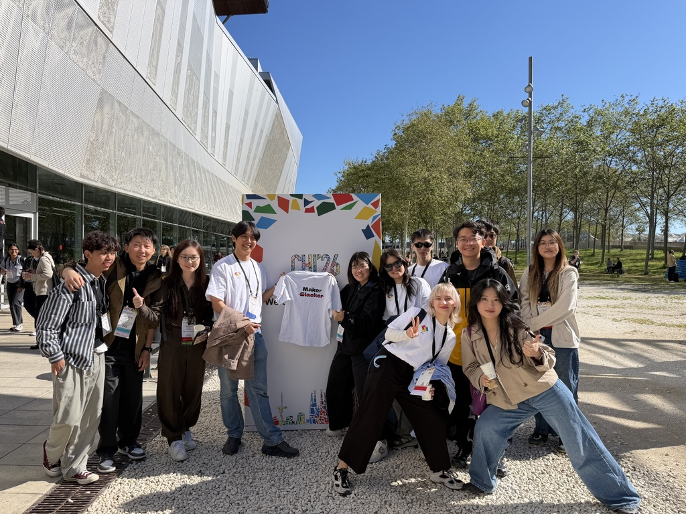
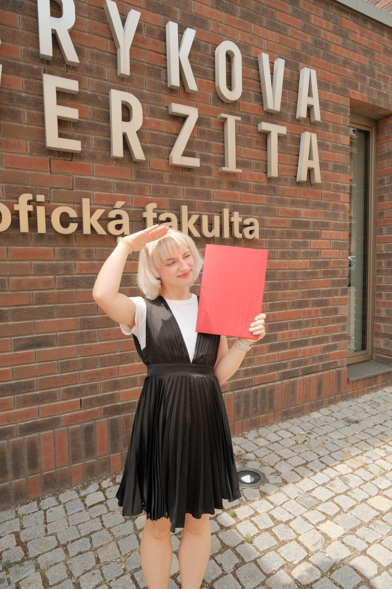

// About
I explore how emerging technologies can expand human perception and interaction.
I’m Anna, a Czech designer and Human-Centered Researcher.
My path connects industry experience in Prague, HCI research in Shenzhen, and graduate studies in Industrial Design at KAIST.
- Currently
- Master’s Student at MAKE Lab, KAIST
- Focus
- HCI, Extended Reality & Accessibility
- Based
- Daejeon, South Korea

Education & Experience
Education
- KAIST
Master’s in Industrial Design
Advisor: Prof. Andrea Bianchi - Masaryk University
Bachelor’s in Design of Information Services
Graduated summa cum laude - Private Business High School
Multimedia and Advertising Creation
Selected Work
- Immersive Design Group, SUSTech
HCI Research Intern
Advisor: Prof. Seungwoo Je - L’Oréal
Key Account Management Intern
- ČSOB
UX Design Intern
- Microsoft
Surface Device Seeding Lead
- Axians
AR Specialist & Product Marketing

// Now
Research through collaboration.
As I pursue my master’s studies in Industrial Design at KAIST, I continue collaborating with the Immersive Design Group at SUSTech. Working across international teams keeps my research grounded in different ways of communicating, perceiving, and making.
Say Hello Across Cultures
Greetings connected to places that have shaped my work and perspective.
Ahoj
“AH-hoy” // Hello
I grew up in the Czech Republic, where my design journey began with multimedia, Design of Information Services, and practical problem-solving.
